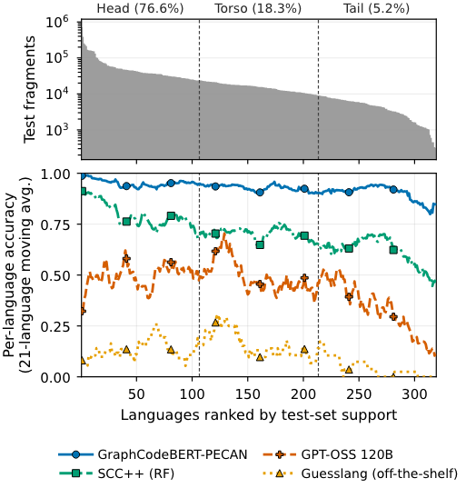

PECAN
A benchmark and reference models for identifying the programming language of a raw code fragment, with no file name, extension, or repository context.
At a glance
Overview
Code increasingly shows up without the file name or extension that tools like GitHub Linguist rely on: pasted into chats and forums, embedded in documentation, recovered from damaged storage, or cut into fixed-length chunks for training foundation models. PECAN measures how well systems identify the language of a raw 512-byte fragment in that setting, across the long tail of languages real corpora contain.
The benchmark has 60.2M fragments across 319 languages from The Stack v1.1. Splits are made at the source-file level and verified to share no files, and the evaluation protocol reports macro-F1 over all 319 labels, mainstream and long-tail slices, and confidence intervals.
Key findings
- Fine-tuned encoders set the state of the art at 95.8% accuracy, and the choice of encoder barely matters.
- Adapting to the data matters more than architecture. Retraining Guesslang on PECAN, with no architecture changes, raises its accuracy from 11.1% to 88.0%.
- Off-the-shelf tools fail on the long tail, not on mainstream languages.
- A zero-shot 120B-parameter LLM reaches only 47% overall, even though it leads on some mainstream languages like Python and Java.
- Label noise is measurable. A manual audit found that about 9% of extension-derived labels don't match the fragment's content, and trained models learn those errors.
What I did
- Fine-tuned encoder models, including CodeBERT and GraphCodeBERT, on 28M+ training fragments.
- Benchmarked them against GPT-OSS-120B, GitHub Linguist, highlight.js, Guesslang, and SCC/SCC++.
- Retrained a Guesslang baseline on our data to separate gains from the architecture from gains from the data.
- Built scalable training and evaluation pipelines with distributed training and hyperparameter sweeps.
- Ran error analysis to find model weaknesses and improve robustness.
Status
I defended my honors thesis on PECAN in May 2026 and presented it at the Stanford Research Conference in April 2026. A paper is in preparation for FORGE, the Conference on AI Foundation Models and Software Engineering.
Figures
